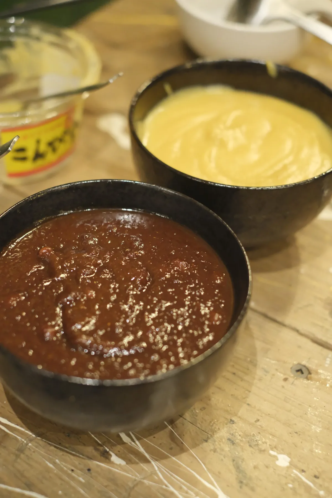
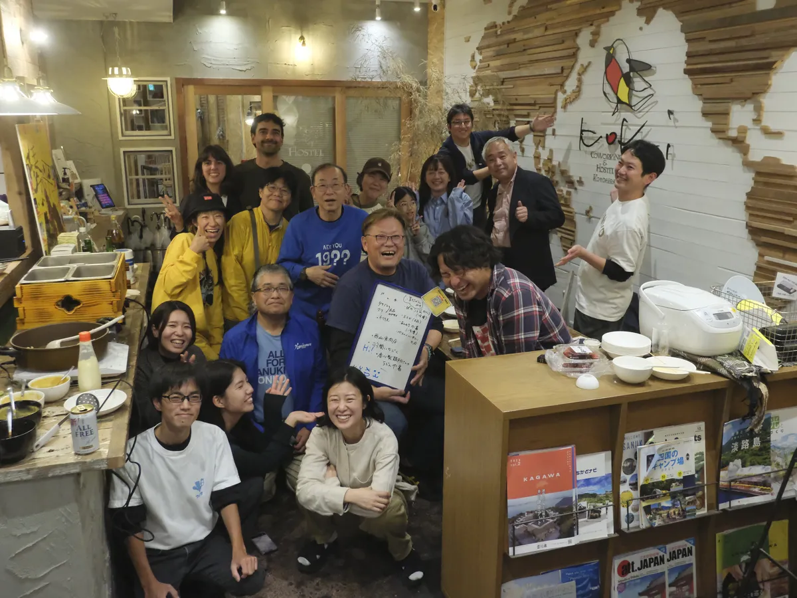

3つの特徴

讃岐うどんの出汁がベース
香川県のうどん店に足を踏み入れると、店の片隅にさりげなく並ぶ「おでん」。実はこの「うどん店のおでん」、香川ではごく当たり前の光景なのです。
その理由は、讃岐うどんに欠かせない「かけだし」。うどん店では毎日大量のだしを仕込みますが、その香り高いだしを無駄にせず、おでんにも活用してきたのがはじまりです。
出汁は琴平の京兼醸造から。いりこと昆布の旨味が効いた、讃岐ならではの味わいです。

こんぴら味噌をつけて食べる
白味噌と赤味噌、2種類のこんぴら味噌を添えてお出しします。出汁の旨味に味噌のコクが重なる、讃岐おでんだけの食体験。
お好みでからしも。出汁だけで食べるもよし、味噌をたっぷりつけるもよし。

みんなで作る、琴平の夜の食文化
香川では一年を通しておでんを提供する店がほとんど。セルフスタイルが主流で、好きな具材を自分で取って、うどんと一緒に楽しむのが定番の食文化です。
県外の人にとってはまだまだ知られていない、驚きの光景。この"うどんとおでんの蜜月関係"を、もっと多くの人に知ってもらいたい。そこから「讃岐おでんプロジェクト」は始まりました。
お客さんとして来た人が、次は仕込みを手伝い、気づけばメニュー開発に参加している。そんな「みんなのおでん屋」です。